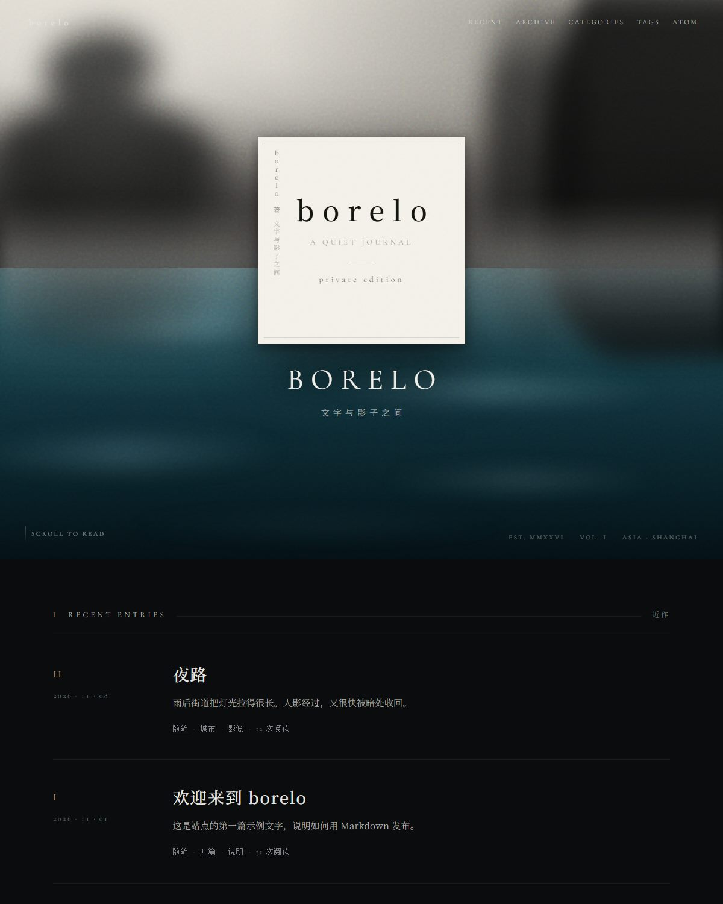
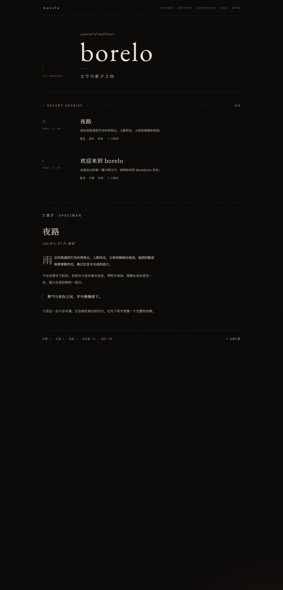
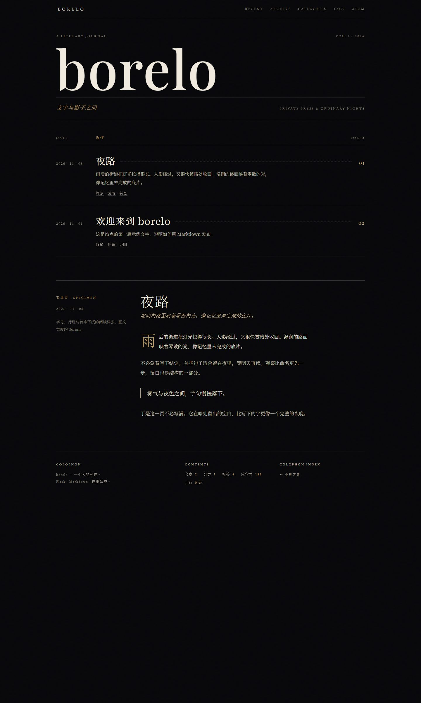
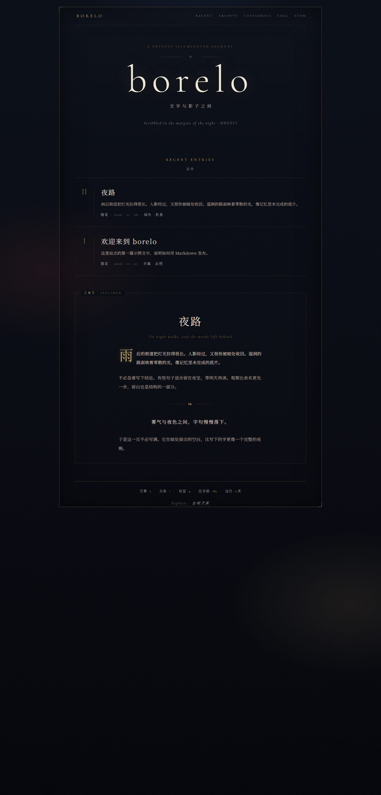
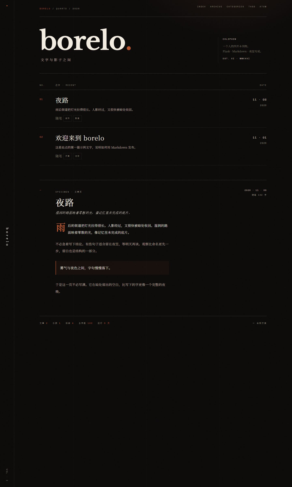

borelo · design studies
2026 年 11 月做的一轮视觉探索。五版都基于站点的真实内容与统计，各含首页与文章页样张。
最终选用 方案 05 · Veil，其结论已落到 static/css/main.css。

方案 05以书籍封面为第一印象。上半失焦的灰白雾面人影，下半深青的湿亮街面， 正中米白标题板，整幅覆粗颗粒。全部由 CSS 生成，无位图。
查看完整页面 →
方案 01最克制的一版。左侧竖向导引栏配罗马数字条目，金色细线分隔，正文首字下沉。
查看完整页面 →
方案 02报纸与文学期刊的骨架。Playfair Display 大字刊头，目录式条目配 Folio 页码， 页脚做成版权页。
查看完整页面 →
方案 03最具装饰性。双层金线书框、四角饰钉、居中标题页与花饰分隔符。
查看完整页面 →
方案 04现代编辑设计。固定竖脊标站名，Libre Baskerville 重字重配锈红点缀， 等宽字体做编号与元数据。
查看完整页面 →五份独立的单文件 HTML，直接双击可开，不依赖站点代码。字体走 Google Fonts， 断网时回退到系统衬线体。这些是设计留档，不参与构建。
当前实现见 README 中的预览图，
样式在 static/css/main.css。